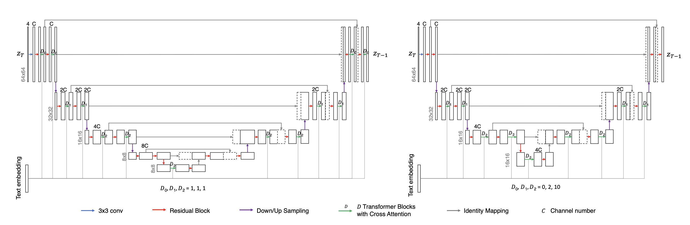
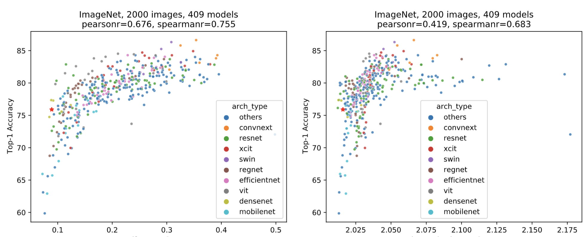
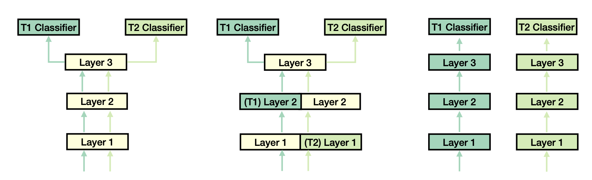

I am a Sr. Applied Scientist at Amazon AGI, working on vision foundation models, especially for text-to-image generation. My research aims at developing efficient, scalable, automatic, transferable and interpretable ML alogrithms, models and systems. I have contributed to various image generation and analysis services including Titan Image Generator model on Amazon Bedrock, as well as AWS Rekognition's Custom Labels, Lookout for Vision and Content Moderation. Before joining Amazon, I received my Ph.D. in Computer Science from University of Maryland, College Park, advised by Prof. Tom Goldstein and Prof. Hanan Samet, with a focus on accelerating and understanding deep neural nets.
News
- [02/2024] "On the Scalability of Diffusion-based Text-to-Image Generation" is accepted in CVPR 2024 (arXiv).
- [11/2023] Our AWS Titan Image Generator is anounced at AWS re:Invent and is avaliable for preview.
- [02/2023] "Guided Recommendation for Model Fine-Tuning" is accepted in CVPR 2023.
- [02/2023] We are looking for research interns for summer 2023 at AWS AI Labs, if you are interested in working on VLMs/generative models for image synthesis, please drop me an email.
Selected Publications
|
 |
On the Scalability of Diffusion-based Text-to-Image Generation Hao Li, Yang Zou, Ying Wang, Orchid Majumder, Yusheng Xie, R. Manmatha, Ashwin Swaminathan, Zhuowen Tu, Stefano Ermon, Stefano Soatto CVPR 2024 [ pdf ] |
|
 |
Guided Recommendation for Model Fine-Tuning Hao Li, Charless Fowlkes, Hao Yang, Onkar Dabeer, Zhuowen Tu, Stefano Soatto CVPR 2023 [ pdf / video / poster ] |
|
 |
Task Adaptive Parameter Sharing for Multi-Task Learning Matthew Wallingford, Hao Li, Alessandro Achille, Avinash Ravichandran, Charless Fowlkes, Rahul Bhotika, Stefano Soatto CVPR 2022 |

|
Rethinking the Hyperparameters for Fine-tuning Hao Li, Pratik Chaudhari, Hao Yang, Michael Lam, Avinash Ravichandran, Rahul Bhotika, Stefano Soatto ICLR 2020 [video] |

|
Visualizing the Loss Landscape of Neural Nets Hao Li, Zheng Xu, Gavin Taylor, Christoph Studer, Tom Goldstein NeurIPS 2018 [project / code / poster] |

|
Training Quantized Nets: A Deeper Understanding Hao Li*, Soham De*, Zheng Xu, Christoph Studer, Hanan Samet, Tom Goldstein NeurIPS 2017 [poster] ICML 2017 PADL Workshop [slides] Google Best Student Paper |

|
Pruning Filters for Efficient ConvNets Hao Li, Asim Kadav, Igor Durdanovic, Hanan Samet, Hans Peter Graf ICLR 2017 [poster] NeurIPS 2016 EMDNN Workshop |
Dissertation
|
|
Towards Fast and Efficient Representation Learning Hao Li University of Maryland, College Park, Aug 2018 [slides] |
Academic Services
- Journal Reviewer
- Journal of Machine Learning Research (JMLR) (editorial board reviewer)
- International Journal of Computer Vision (IJCV)
- IEEE Transactions on Pattern Analysis and Machine Intelligence (TPAMI)
- IEEE Transactions on Neural Network and Learning Systems (TNNLS)
- IEEE Transactions on Multimedia (TMM)
- Neurocomputing
- Conference Reviewer
- NeurIPS, ICML, ICLR, ICCV, CVPR, ECCV, KDD, AAAI